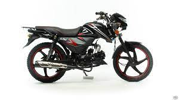
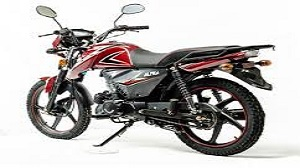

Советские мотоциклы и Альфа


Мопед MOTOLAND ALPHA RX обладает современным кузовом и дизайном, а также высоким качеством изготовления и сборки. Мопед отлично подойдет как подарок и первый мотоцикл для любого подростка или же он может стать отличной лошадкой для передвижения по городским джунглям.
Экономичный расход бензина (3.5 л на 100 км)
Повышенная маневренность и проходимость
Электростартер.
Подходит в качестве первого мотоцикла. Сам мотоцикл 4 тактный имеет размер шин 2.75-17.